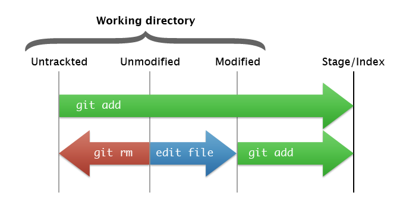
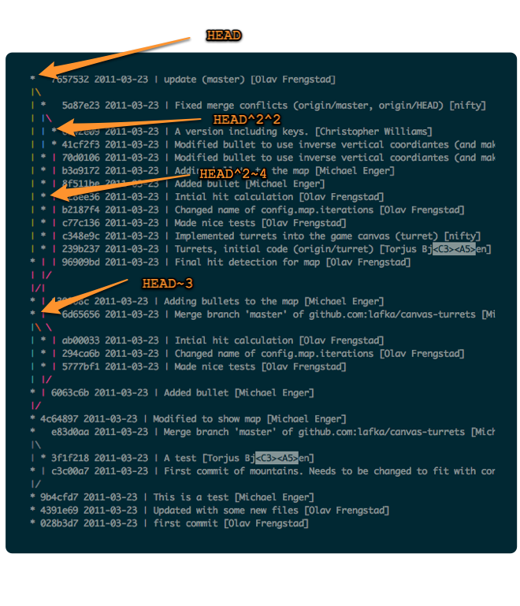

<!DOCTYPE html>

<!--
Google HTML5 slide template

Authors: Luke Mahé (code)
Marcin Wichary (code and design)

Dominic Mazzoni (browser compatibility)
Charles Chen (ChromeVox support)

URL: http://code.google.com/p/html5slides/
-->

<html>
<head>
	<title>Presentation</title>

	<meta charset="utf-8">
	<script src="http://html5slides.googlecode.com/svn/trunk/slides.js"></script>
</head>
<style type="text/css">
	/* Your individual styles here, or just use inline styles if that’s
	what you want. */
	
	body {
		background: url(http://subtlepatterns.com/patterns/inflicted.png) repeat!important;
	}
	.slides.template-default > article:not(.nobackground):not(.biglogo) {
		background: none #fff!important;
	}
	
	
	img {
		margin: 0 auto;
		display: block;
	}
	figcaption {
		font-size: 12px;
		font-style: italic;
		text-align: right;
	}

	.slides > article {
		opacity: .1;
	}
	.slides .current { opacity: 1; }
		

	.center p {
		text-align: center;
		margin-top: 280px!important;
		font-weight: 700;
		font-size: 40px!important;
	}
</style>

<body style="display: none">

	<section class="slides layout-faux-widescreen template-default">

		<article>
			<h1>
				Understanding Git
			</h1>
			<p>
				Torjus Bjåen
			</p>
		</article>
		
		<article>
			<h1>Why Git?</h1>
			
			<ul class="build">
				<li>
					Fully distributed – Everything is local!
				</li>
				<li>
					Large set of tools
				</li>
				<li>
					It's not SVN/CVS
				</li>
			</ul>
		</article>
		
		<article>
			<h4>Getting started</h4>
			<div class="build">
				<div>
					<p>Configuration</p>
					<pre>git config --global user.name "Torjus Bjåen"
git config --global user.email torjus@07.no</pre>
				</div>
				
				<div>
					<p>Setting up a repository</p>
					<pre>mkdir foo && cd foo
git init</pre>
					<pre>git clone /path/to/git-repo.git</pre>
				</div>
			</div>
		</article>
		
		<article class="smaller">
			<h4>Handy stuff</h4>
			
			<pre>git config --global alias.co checkout
git config --global alias.br branch
git config --global alias.ci commit
git config --global alias.st "status -sb"
git config --global alias.unstage 'reset HEAD --'
git config --global alias.last 'log -1 HEAD'
git config --global alias.hist "log --graph --pretty=format:'%Cred%h%Creset -%C(yellow)%d%Creset %s %C(bold blue)<%an>%Creset' --abbrev-commit --date=relative"
git config --global alias.prune-local "!git branch --merged | grep -v "^\*" | xargs git branch -d"

git config --global color.ui auto
git config --global core.editor vi
git config --global push.default current</pre>
		</article>
		
		<article>
			<h4>The index / staging area</h4>
			
			<ul>
				<li>Stage changes, not files</li>
			</ul>
		</article>
		
		<article>
			<h3>Adding changes</h3>
			<ul>
				<li>
					Adding hunks (patch mode)
					<pre><code>git add --patch # or just -p</code></pre>
				</li>
				<li>
					Adding full files
					<pre><code>git add --interactive # or just -i</code></pre>
				</li>
			</ul>
		</article>
		
		<article class="smaller">
			<h4>Commit</h4>
			<figure>
				
				<figcaption>Image from <a href="http://progit.org/book/ch3-1.html">Pro Git book</a></figcaption>
			</figure>
		</article>
		
		<article>
			<h4>Commit message</h4>
			<ul>
				<li>Short and precise</li>
				<li>Keep to on line</li>
				<li>If more is needed, use the body (separeted by two new lines)</li>
			</ul>
		</article>
		<article class="fill smaller">
			<pre class="noprettyprint">
Capitalized, short (50 chars or less) summary

More detailed explanatory text, if necessary.  Wrap it to about 72
characters or so.  In some contexts, the first line is treated as the
subject of an email and the rest of the text as the body.  The blank
line separating the summary from the body is critical (unless you omit
the body entirely); tools like rebase can get confused if you run the
two together.

Write your commit message in the present tense: "Fix bug" and not "Fixed
bug."  This convention matches up with commit messages generated by
commands like git merge and git revert.

Further paragraphs come after blank lines.

- Bullet points are okay, too

- Typically a hyphen or asterisk is used for the bullet, preceded by a
  single space, with blank lines in between, but conventions vary here

- Use a hanging indent
			</pre>
		</article>
		<article class="smaller">
			<h4>The bad</h4>
			<div class="build">
				<pre class="noprettyprint">commit f0f1d05ceb620c4cc73d24cba005faf9e4624d47
Author: Olav Frengstad <olav.frengstad@07.no>
Date:   Fri Mar 18 18:54:15 2011 +0100

    Updated orderlines tests with correct mock objects and VAT
calculations, moved config values into the suite 
and correct variable for the gateway execution test</pre>
			<pre class="noprettyprint">commit 29a917a91e543ac791fab34a96d75d6da66eb123
Author: Jon-Morten Kristiansen <jonmorten@07.no>
Date:   Tue Apr 5 15:19:12 2011 +0200

    07design</pre>
			</div>
		</article>
		<article class="smaller">
			<h4>The good</h4>
			<div class="build">
				<pre class="noprettyprint">commit 834347e06d093597457799f333f2b888cb833be2
Author: Michael Enger <michael.enger@07.no>
Date:   Tue Jun 28 10:38:01 2011 +0200

    Changed the override node IDs for live</pre>
				<pre class="noprettyprint">commit 92b9bf4ee5c9ddeef4bed1ae3f479695d772acd2
Author: Torjus Bjåen <torjus@07.no>
Date:   Tue Oct 4 10:27:43 2011 +0200

    Adapt ganshop/userregister to the new registration flow
    
    Only show address fields if user_type = private, else show institution.
    
    If it's a new user, display radio buttons to select private or institution.</pre>
			</div>
		</article>
		<article class="center">
			<p>Commit early, commit often!</p>
		</article>
		<article class="smaller">
			<pre class="noprettyprint" style="margin-top:-20px">virtual gan.aschehoug git:stage ❯ g show 1d6e0c1916e2789852bd4aaefbdc334da2d10efc --name-only                                                                                                 ✹
commit 1d6e0c1916e2789852bd4aaefbdc334da2d10efc
Author: Christopher Williams <christopher.williams@07.no>
Date:   Mon Apr 4 14:00:03 2011 +0200

    Shared - unfinished

.buildpath
.externalToolBuilders/org.eclipse.wst.common.project.facet.core.builder.launch
.gitignore
DEB604591#Navision_SO_1_10506.xml
DEB607620#Navision_SO_1_10507.xml
DEB607652#Navision_SO_1_10505.xml
extension/07site_gan.aschehoug/autoloads/eztemplateautoload.php
extension/07site_gan.aschehoug/bin/php/ga.utilities.php
extension/07site_gan.aschehoug/classes/ga_shop.php
extension/07site_gan.aschehoug/cronjobs/ga.stats.php
extension/07site_gan.aschehoug/design/gan.aschehoug/templates/shop/userregister.tpl
extension/07site_gan.aschehoug/modules/ganshop/module.php
extension/07site_gan.aschehoug/modules/ganshop/test.php
extension/07site_gan.aschehoug/modules/ganshop/userregister.php
extension/07site_gan.aschehoug/settings/site.ini.append.php
extension/shop_register_user_workflow/design/shop_register_user_workflow/templates/workflow/eventtype/edit/event_ezsimple07logit.tpl
extension/shop_register_user_workflow/eventtypes/event/ezsimple07logit/ezsimple07logittype.php
extension/shop_register_user_workflow/settings/design.ini.append.php
extension/shop_register_user_workflow/settings/simple.trigger.workflow.ini.php
extension/shop_register_user_workflow/settings/workflow.ini.append.php
ftp.sample.xml.files.zip
ga/bin/php/test.incoming.multi.raw.xml.php
siteaccess/gan.aschehoug_admin/site.ini.append.php
siteaccess/gan.aschehoug_admin/workflow.ini.append.php
siteaccess/gan.aschehoug_no/site.ini.append.php</pre>
		</article>
		<article>
			<h1>Snap, I forgot something!</h1>
			<div class="build"><pre>git commit --amend</pre></div>
		</article>

		<article>
			<h4>Referencing commits</h4>

			<ul class="build">
				<li>
					Hash, <code>980e3ccdaac54a0d4de358f3fe5d718027d96aae</code>
				</li>
				<li>
					Branch, remote, tag
				</li>
				<li>
					Date, <code>HEAD@{"2 days ago"}</code>, <code>master@{yesterday}</code>
				</li>
				<li>
					Reflog, <code>HEAD@{3}</code>
				</li>
				<li>
					Carrot Parent, Nth parent of commit <code>HEAD^</code>
				</li>
				<li>
					Tilde, Nth grandparent of commit <code>HEAD~3</code>
				</li>
				<li>
					Range, <code>HEAD@{3}..980e3cc</code>, <code>HEAD@{3}..</code>
				</li>
			</ul>
		</article>

		<article class="nobackground">
			<figure>
				
			</figure>
		</article>
		
		<article>
			<h2>Branching</h2>
		</article>

		<article>
			<h4>What is a branch?</h4>
			<div class="build">
				<p>A line in a file</p>
				<pre>cat .git/refs/heads/master
69850ef070120aaf90c4015b99ec3b320b355783</pre>
			</div>
		</article>

		<article>
			<figure style="margin-top: 140px;">
				
				<figcaption>Image from <a href="http://progit.org/book/ch3-1.html">Pro Git book</a></figcaption>
			</figure>
		</article>

		<article>
			<h4>How to use</h4>

			<pre class="build"><span># creating a branch
git checkout -b foo # git branch foo && git checkout foo</span>

<span># create a branch with a starting point
git checkout -b foo origin/foo # also sets up tracking</span>

<span># deleting a branch
git branch -d foo # -D for unsafe delete</span></pre>
		</article>

		<article>
			<h4>Merging</h4>
			<div>
				<ul class="build"> 
					<li>Why not rebase?</li>
					<li>Merging is non destructive, rebase is not</li>
				</ul>
				<figure class="build" style="width:700px; overflow:hidden; border-radius: 3px;">
					
				</figure>
			</div>
		</article>

		<article>
			<h4>Rebase interactive</h4>

			<ul class="build">
				<li>Rewrite history</li>
				<li>Squash commits</li>
				<li>Reorder commits</li>
			</ul>
			<p class="build">
				<code>git rebase --interactive HEAD~5</code>
			</p>
		</article>

		<article>
			<h2>Working with remotes</h2>
		</article>

		<article class="smaller">
			<h4>The pull</h4>
			
			<ul class="build">
				<li>A remote is just another git repository (<em>probably</em> "bare")</li>
				<li><code>git remote add github git@github.com:lafka/canvas-turrets.git</code></li>
				<li><em class="red">Warning:</em> you probably shouldn't name your remote the same as a branch</li>
				<li>
					<dl>
						<dt><code>git fetch</code></dt>
						<dd>download new branches and data from a remote repository</dd>

						<dt><code>git pull</code></dt>
						<dd>fetch from a remote repo and try to merge into the current branch</dd>
					</dl>
				</li>
				<li><code>git pull</code> by itself <em>can</em> be dangerous</li>
				<li>
					<code>git pull origin master</code> equals:
					<pre><code>git fetch origin
git merge origin/master</code></pre>
				</li>
				<li>
					<code>git branch -a</code> displays remote and local branches
				</li>
			</ul>
		</article>

		<article class="smaller">
			<h4>The push</h4>

			<ul class="build">
				<li>Push changes and branches to the remote</li>
				<li>By default, just <code>git push</code> can be dangerous (see <code>git config push.default</code>)</li>
				<li>Syntax: <code>git push REMOTE_NAME LOCAL_BRANCH:REMOTE_BRANCH</code></li>
				<li>More convenient: <code>git push REMOTE_NAME BRANCH_NAME</code></li>
				<li>Deleting a remote branch: <code>git push REMOTE_NAME :REMOTE_BRANCH</code> (notice to colon)</li>
			</ul>

			<div class="build">
				<div>
					<pre class="noprettyprint">
bar git:master ❯ g push
To /Users/torjus/Development/foo
 ! [rejected]        HEAD -> master (non-fast-forward)
error: failed to push some refs to '/Users/torjus/Development/foo'
To prevent you from losing history, non-fast-forward updates were rejected
Merge the remote changes (e.g. 'git pull') before pushing again.  See the
'Note about fast-forwards' section of 'git push --help' for details.</pre>
					<p>Problem?</p>
				</div>
				<p>You <em>probably</em> have commits you haven't merged in from the remote</p>
			</div>
		</article>

		<article class="smaller">
			<h4>Good to know</h4>

			<ul class="build">
				<li><code>git stash</code>: stash away unfinished changes</li>
				<li><code>git show</code>: show various objects (hash, remote, tag, etc.)</li>
				<li><code>git merge --no-ff</code>: force merge commit</li>
				<li><code>apt get install gitk git-gui</code> together with <code>ssh -X foo</code></li>
				<li><code>git reset --hard HEAD</code>: reset your working directory to HEAD</li>
				<li><code>git revert 1d6e0c191</code>: revert a commit by creating a commit that undoes it</li>
				<li><code>git config --global core.excludesfile ~/gitignore_global</code>: global git ignore file!</li>
			</ul>
		</article>

		<article>
			<h4>Useful references</h4>
			<ul>
				<li>
					Git Immersion: <a href="http://library.edgecase.com/git_immersion/">http://library.edgecase.com/git_immersion/</a>
				</li>
				<li>
					Git Reference: <a href="http://gitref.org">http://gitref.org</a>
				</li>
				<li>
					Community book: <a href="http://book.git-scm.com/index.html">http://book.git-scm.com/index.html</a>
				</li>
					Pro git: <a href="http://progit.org/book/">http://progit.org/book/</a>
				</li>
				<li>
					Interactive cheatsheet: <a href="http://ndpsoftware.com/git-cheatsheet.html">http://ndpsoftware.com/git-cheatsheet.html</a>
				</li>
				<li>
					The git manual: <code>man git</code>, <code>man git-commit</code>, <code>git add --help</code>
				</li>
			</ul>
		</article>

		<article class="center">
			<p>Thank you!</p>
		</article>
	</section>

</body>
</html>
